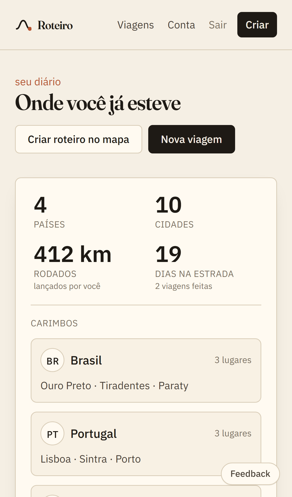

Protótipo · ainda não publicado
O roteiro da viagem, dia a dia, no mapa
Lugares que existem, conferidos no Google Maps, com horário e caminhada medida. Tirou uma parada, o dia se refaz. Chame os amigos por um link. Depois, o diário guarda os países, as cidades e os km.
Você responde sete perguntas; o dia sai pronto
Clique em qualquer tela para vê-la inteira. Todas são fotos do app rodando, sem retoque.
Um link só, o mesmo para todo mundo
Quem abrir entra e já edita junto. A tela de quem está com a viagem aberta se atualiza sozinha.
Onde você já esteve, em números
Países, cidades, km rodados e dias na estrada — contando só o que já aconteceu.
É onde a viagem acontece
O mesmo app no computador e no telefone. As telas de arrastar e deslizar são testadas em Chrome, Safari e Firefox a cada mudança.

O aviso chega antes de você precisar dele
No dia da viagem o roteiro não fica preso na tela: o app avisa qual é a próxima parada, a que horas e quanto falta para chegar. E avisa também quando alguém do grupo mexe em alguma coisa.
- Próxima parada, com o horário e a distância a pé.
- Troca de cidade: o trem, a plataforma e o dia já montado do outro lado.
- Sugestão nova do grupo, para votar sem abrir o app.
- Véspera: "amanhã é o seu dia 3", com o resumo.
08:12
sexta, 12 de março
PRÓX. PARADA · RESTAURANTE DO NINO
12:30 · 400 m a pé daqui. Reserva no nome de Ana, mesa para 4.
PRÓX. PARADA · VENEZA, ITÁLIA
Trem 08:12 de Florença, plataforma 4. O dia 5 já está montado do outro lado.
Bruno sugeriu o Mosteiro dos Jerónimos
"meu irmão jura que o pastel daqui é o melhor" — toque para votar.
Amanhã é o seu dia 3
7 paradas, 8,7 km, começa às 09:40 no Miradouro da Senhora do Monte.
Dia 1 de graça; o resto por Pix
Entra com Google ou por um link no e-mail. Sem senha, sem assinatura.
O que foi ficando pronto
Construído em etapas, cada uma com teste antes de seguir.
-
O motor
Agrupa por região, ordena, encaixa horários e refaz só o dia que você mexeu. 69 testes.
-
Conta, amostra e Pix
Entrar sem senha, dia 1 de graça, pagamento com confirmação automática e modo offline.
-
Viagem em grupo
Um link por viagem, edição junto, sugestões com voto e "quem colocou cada parada".
-
Diário do viajante e conversa
Passaporte, quadro arrastável, caderno preenchível — e o chat do grupo dentro da viagem.
-
Safari, Firefox, Android e iPhone
A suíte passou a rodar nos cinco. O WebKit revelou uma edição do caderno que podia se perder antes de gravar; corrigido no mesmo dia.
A demo funciona de verdade
Arraste os cartões, deslize no celular, abra um caderno e preencha um trecho: os km sobem no passaporte na hora.
Abrir a demo